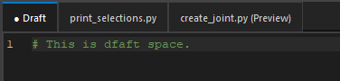
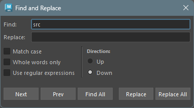
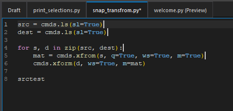
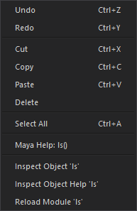
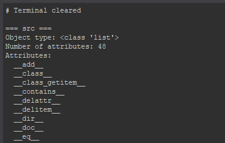

コードエディター
概要
コードエディターは実際にコードを書くための主要なインターフェースです。
シンタックスハイライト、エラーチェックなどの高度なコード編集機能を提供します。

タブ管理
Draft タブ
Draft
タブは、コードの一時的なメモやスニペットを保存するためのスペースです。
このタブは、常に表示され閉じることはできません。

永続タブとプレビュータブ
コードエディターでは、ファイルを永続タブまたはプレビュータブで開くことができます。 この二つのタブは、実際にファイルを編集するためのタブです。
ファイルエクスプローラーのファイルをクリックすることで、以下のようにタブが開きます。
永続タブ: ファイルを ダブルクリック して開くと、永続タブとして開きます。
永続タブは、複数のファイルを同時に開いて編集できます。
編集中のファイルは、タブ上にアスタリスク (*) が表示されます。
プレビュータブ: ファイルを シングルクリック して開くと、プレビュータブとして開きます。
プレビュータブは、1 つのタブで複数のファイルを順番にプレビューできます。
新しいファイルをプレビューすると、前のプレビュー内容は上書きされます。
二つのタブは、ドラッグアンドドロップで順番を入れ替えることができます。
また、タブの上で中クリックすることにより、タブを閉じることができます。
検索/置換
コードエディターでは、検索と置換の機能が組み込まれています。
Ctr+F/Ctrl+H で検索/置換ダイアログが表示されます。

フィールド
- Find: 検索する文字列を入力します。
- Replace: 置換する文字列を入力します。
チェックボックス
- Match case: オンの場合、大文字と小文字を区別して検索します。
- Whole words only: オンの場合、完全一致する単語のみを検索します。
- Use regular expression: オンの場合、正規表現を使用して検索します。
検索方向 ( Direction )
- Up: カーソルの上方向に向かって検索します。
- Down: カーソルの下方向に向かって検索します。
ボタン
- Next: 次の一致する箇所に移動します。
- Prev: 前の一致する箇所に移動します。
- Find All: 一致するすべてを選択しマルチカーソルモードにします。
- Replace: 現在の一致する箇所を置換します。
- Replace All: 一致するすべての箇所を置換します。
マルチカーソル
コードエディターでは、マルチカーソル機能をサポートしています。
Ctrl
キーを押しながらクリックすることで、複数のカーソルを配置できます。

マルチカーソルモード中も、通常の編集操作が可能です。
例えば、選択やコピー、貼り付け、削除などが行えます。
マルチカーソルモードでの主なショートカットキーは以下の通りです。
| ショートカットキー | 機能説明 |
|---|---|
| Ctrl+Click | カーソルを追加 |
| Ctrl+Drag | 選択範囲を追加 |
| Middle-Click+Drag | 矩形/列選択 |
| Ctrl+D | 次の出現箇所 |
| Ctrl+Shift+L | すべての出現箇所 |
| Alt+Shift+I | 行末にカーソルを追加 |
| Escape | カーソルをクリア |
特殊なコンテキストメニューの機能
コンテキストメニュー（右クリックメニュー）には、コードエディター特有の機能がいくつかあります。

コマンドヘルプ表示
コンテキストメニューから Maya の python (cmds) と OpenMaya (om) コマンドのヘルプがブラウザで表示できます。
ドキュメントを表示するには、cmds
に続く関数名を以下のように選択します。

選択後、コンテキストメニューから Maya Help:
対応しているコマンドは以下の通りです。
対応文字列に続く関数名のヘルプが表示されます。
| モジュール名 | 対応文字列 |
|---|---|
| maya.cmds | cmds, mc |
| maya.api.OpenMaya | om, OpenMaya |
| maya.api.OpenMayaUI | omui, OpenMayaUI |
| maya.api.OpenMayaAnim | oma, OpenMayaAnim |
| maya.api.OpenMayaRender | omr, OpenMayaRender |
Inspect Object (Help)
コンテキストメニューから Maya のオブジェクトの中身を調べることができます。
オブジェクトの文字列を選択し Inspect Object:
実行するとターミナルにオブジェクトの情報が表示されます。
Inspect Object の例

リロード
コンテキストメニューから選択したモジュールをリロードできます。
モジュールの文字列を選択し Reload Module:
実行するとそのモジュールがリロードされます。
ショートカットキー
コードエディターで使用できる主なショートカットキーは以下の通りです。
| ショートカットキー | 機能説明 |
|---|---|
| Ctrl+N | 新規ファイル作成 |
| Ctrl+S | 現在のファイルを保存 |
| Ctrl+Shift+S | すべての開いているファイルを保存 |
| Ctrl+D | 次の出現箇所を選択（マルチセレクション） |
| Ctrl+Shift+D | 現在の行を複製 |
| Ctrl+Shift+K | 現在の行を削除 |
| Ctrl+L | 現在の行を選択（繰り返しで拡張） |
| Ctrl+Shift+Up/Down | 行を上下に移動 |
| Ctrl+/ | 行コメントの切り替え |
| Tab / Shift+Tab | 選択のインデント/インデント解除 |
| Enter | 自動インデント付きのスマート改行 |
| Ctrl+Click | クリック位置にカーソルを追加 |
| Ctrl+Drag | 選択範囲を追加（ドラッグして異なるコードを選択） |
| Middle-Click+Drag | 矩形/列選択（矩形エリア内のテキストを選択） |
| Ctrl+D | 単語を選択して次の出現箇所を追加 |
| Ctrl+Shift+L | 現在の単語のすべての出現箇所を選択 |
| Alt+Shift+I | 選択内の行末にカーソルを追加 |
| Escape | すべてのマルチカーソルをクリア |
| Ctrl+F | 検索ダイアログ |
| Ctrl+H | 置換ダイアログ |
| F3 / Shift+F3 | 次/前を検索 |
| Ctrl+Enter | 現在の行または選択を実行 |
| Numpad Enter | 現在のスクリプトを実行（実行ボタンと同じ） |
| Ctrl+Shift+Enter | ファイル全体を実行 |
| Ctrl+K | ターミナル出力をクリア |
| Ctrl+MouseWheel | フォントサイズの調整 |